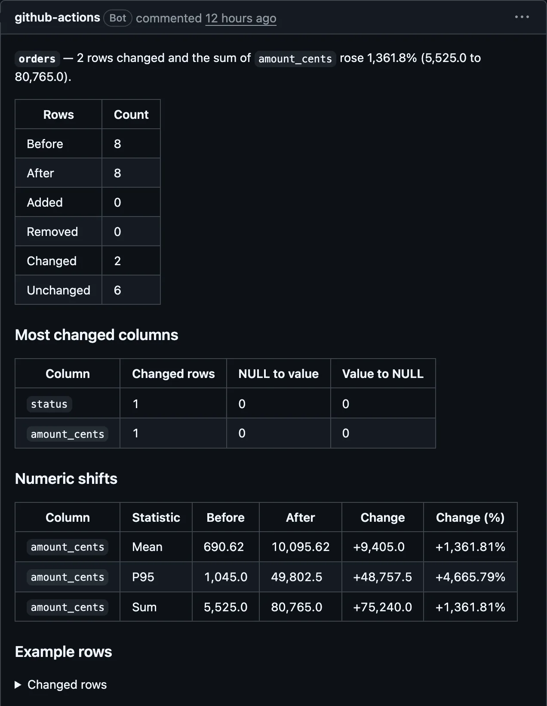

The row counts hold
Both models kept the same keys. The comment still found changes within matching rows.
| Model | Before | After | Changed |
|---|---|---|---|
| orders | 8 | 8 | 2 |
| customers | 4 | 4 | 1 |
PR #1 · jaffle_demo/orders · order 103 · amount_cents
diffscope caught it before merge.
Before 760 cents After
Both models kept the same keys. The comment still found changes within matching rows.
| Model | Before | After | Changed |
|---|---|---|---|
| orders | 8 | 8 | 2 |
| customers | 4 | 4 | 1 |
On order 101, the change to status adds a single letter.
101 · statusOrder 103 was already in cents. Its amount grew by a factor of 100.
103 · amount_centsOrder 103 belongs to customer 2. The higher order amount carries into the customers model.
2 · total_amount_centsThe sum of amount_cents rose 1,361.8%. A single order moved both the mean and the upper end of the distribution.
| Statistic | Before | After |
|---|---|---|
| Sum | 5,525.0 ×14.6 | 80,765.0 |
| Mean | 690.62 ×14.6 | 10,095.62 |
| P95 | 1,045.0 ×47.7 | 49,802.5 |
Both models kept the same row count. The comment shows which values changed.
Read the full comment on GitHub
| Comparison | Count |
|---|---|
| Before | 8 |
| After | 8 |
| Added | 0 |
| Removed | 0 |
| Changed | 2 |
| Unchanged | 6 |
| Column | Changed rows |
|---|---|
| status | 1 |
| amount_cents | 1 |
| Statistic | Before | After |
|---|---|---|
| Mean | 690.62 ×14.6 | 10,095.62 |
| P95 | 1,045.0 ×47.7 | 49,802.5 |
| Sum | 5,525.0 ×14.6 | 80,765.0 |
| order_id / column | Before | After |
|---|---|---|
| 101 status | complete | completed |
| 103 amount_cents | 760 ×100 | 76,000 |
| Comparison | Count |
|---|---|
| Before | 4 |
| After | 4 |
| Added | 0 |
| Removed | 0 |
| Changed | 1 |
| Unchanged | 3 |
| Column | Changed rows |
|---|---|
| total_amount_cents | 1 |
| Statistic | Before | After |
|---|---|---|
| Mean | 1,381.25 ×14.6 | 20,191.25 |
| Median | 1,637.5 ×1.3 | 2,137.5 |
| P95 | 2,216.25 ×29.5 | 65,354.0 |
| Sum | 5,525.0 ×14.6 | 80,765.0 |
| customer_id / column | Before | After |
|---|---|---|
| 2 total_amount_cents | 1,250 ×61.2 | 76,490 |
Order 101 shows the intended status rename. The currency error on order 103 raised customer 2’s total. Across orders, the sum of amount_cents rose 1,361.8%.
DuckDB checks that the key identifies each row uniquely in both versions. A full outer join on the key finds rows that appear on just one side and marks them as added or removed.
For matching keys, two NULLs count as equal. A NULL paired with a value counts as a change. For numeric columns of the same type, diffscope tables --tolerance treats absolute differences up to the threshold as equal. The default is 0.
The diff lists added, removed and retyped columns. It compares retyped columns as text. Numeric summaries cover each full table, including rows that were added or removed.
DuckDB SQL handles the checks, join, counts and summaries. Python runs the queries and formats the result for the pull request.
| Rows per side | Changed rows | Wall time (s) |
|---|---|---|
| 100,000 | 1,000 | 0.023≈4,347,826 rows/s |
| 1,000,000 | 10,000 | 0.071≈14,084,507 rows/s |
| 10,000,000 | 100,000 | 0.541≈18,484,288 rows/s |
Darwin arm64 with a 4 GB memory limit. Each time is a single wall-clock observation and excludes table creation. A confidence interval requires repeated runs.Each scenario starts with 1,000 synthetic rows. The expected counts and aggregates are exact properties of those tables.
Fixtures and verification plan| Scenario | Expected result | Expectation |
|---|---|---|
| identical | 1,000 unchanged rowsEqual values, including two NULLs, stay unchanged. | known |
| value_changes | 10 changed rows, all in amountChanges are counted at the row and column level. | known |
| additions_removals | 20 added, 10 removed, 0 changedRows are matched by key, and the sum reflects rows added or removed. | known |
| null_flips | 20 changed, with 10 flips in each directionNULL to value and value to NULL are counted separately. | known |
| retyped_column | amount changes from INTEGER to VARCHAR, with 0 changed rowsA type change is reported even when the text values match. | known |
| renamed_column | memo added, note removed, 0 changed rowsA rename appears as an added column and a removed column. | known |
| fanout_join | 10 duplicate keys, with 3 examples in the errorA join fanout fails the uniqueness check before comparison. | known |
| currency_unit | 10 changed rows, sum rises from 120,000 to 219,000, mean rises from 120 to 219A unit error shifts the sum and mean even when the median and P95 stay fixed. | known |
Run these commands from the repository root with Python 3.10 or newer.
Repository instructionspython -m pip install .diffscope tables baseline.orders candidate.orders --db shop.duckdb --key order_id
diffscope tables before.csv after.parquet --key order_idRepeat --key for a composite key. Use --format json for machine-readable output.
python -m pip install 'dbt-duckdb>=1.11,<1.12' 'dbt-core>=1.11,<1.12'
bash examples/jaffle_demo/build.sh
diffscope dbt --project-dir examples/jaffle_demo --models orders customers \
--base-schema baseline --target-schema candidateThe command reads meta.diffscope_keys from the manifest. Override it with --key, or choose the DuckDB file with --db.
Grant comment permission in the pull_request workflow and group runs by pull request.
permissions:
contents: read
pull-requests: write
concurrency:
group: diffscope-${{ github.event.pull_request.number }}
cancel-in-progress: trueAfter checkout, Python setup and the build of both schemas, add the comparison step.
- uses: Ghostboy789/diffscope@main
with:
project-dir: examples/jaffle_demo
models: orders customers
base-schema: baseline
target-schema: candidateThe action uses gh to create or update one comment. The demo skips this step on fork pull requests, where the token is read-only. Demo workflow
Datafold archived its open-source table comparison tool in May 2024. datafold/data-diff archive